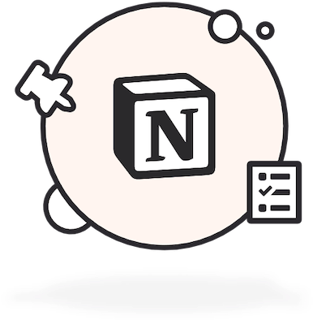
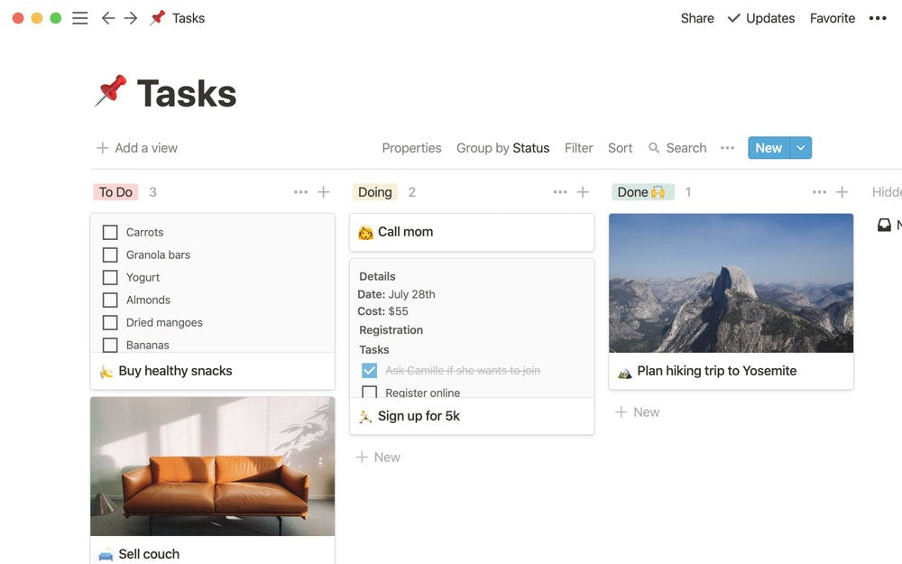
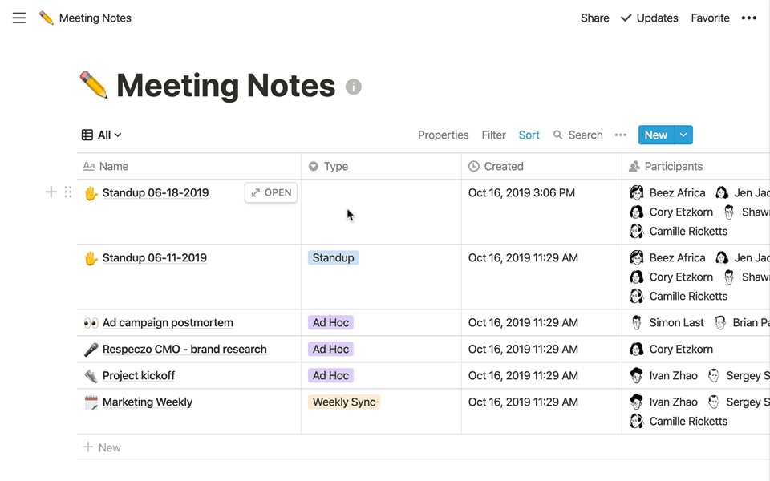
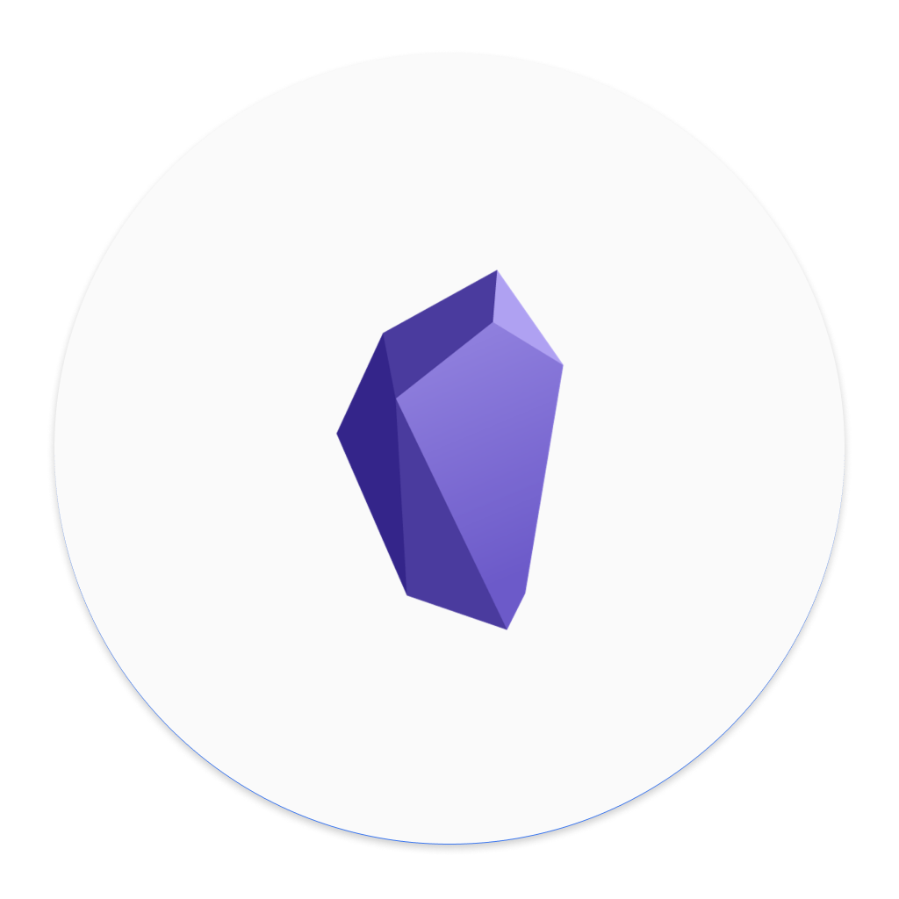
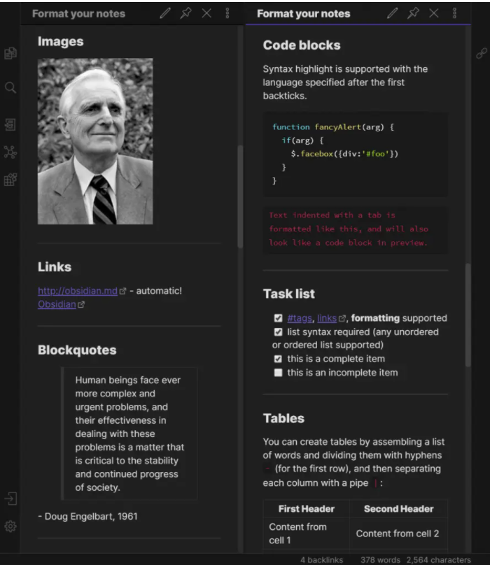
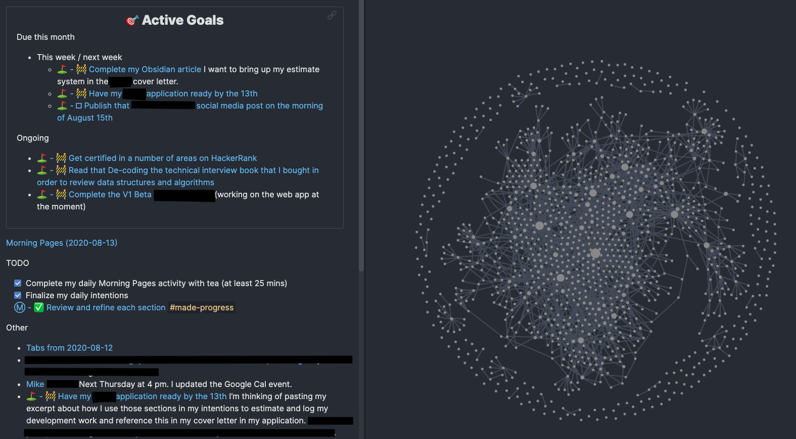
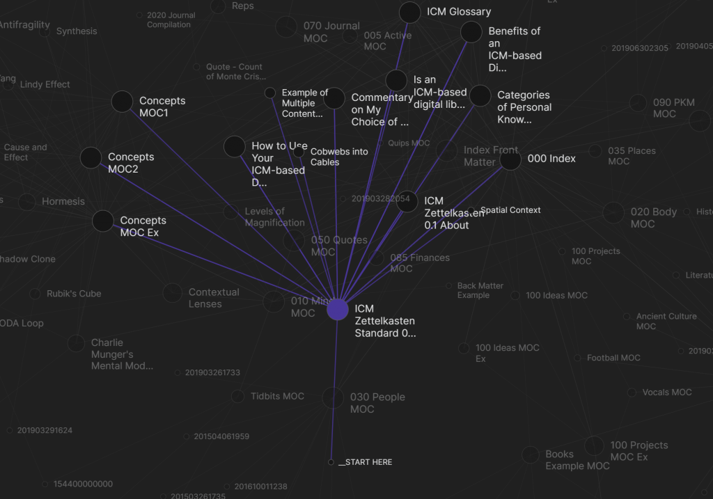

Notion
2.21.21.19

FUNCIONALITATS
Organització
Notion permet organitzar projectes, crear llistes d'idees i/o de tasques, fer taules de control de gastos, i ordenar tota la info en taules, bases de dades, wikis o entrades, mitjançant la creació de carpetes i subcarpetes, amb les quals l'usuari troba el que vol ràpidament.
Control
Permet dur a terme un control de calendaris i tasques per a la planificació personal i/o laboral.
Sincronització
Amb internet o sense, permet apuntar y organitzar tasques que se sincronitzaran en el moment que hi hagi connexió a Internet.
Eina de Col.laboració
Permet compartir el contingut amb altres usuaris de l'aplicació o amb persones externes.


Captures
Finançament
Tot i que existeix una versió de l'app gratuïta (amb certes limitacions), Notion finança la seva companyia amb un model de subscripció d'uns 4$ mensuals.
A més, gran part del seu creixement és degut a l'aportació de grans inversors com ara Shana Fisher, inversora de Pinterest; Naval Ravikant, inversor de Twitter i Uber; Ram Shriram, de Google; o Mike Vernal, ex vicepresident de plataformes de Facebook.
La Companyia
Notion Labs, que és com s'anomena la startup darrere de Notion, fou fundada l'any 2013 per Ivan Zhao. Amb seu a San Francisco i amb més de 56 treballadors, és una empresa molt ben valorada pels inversors de risc.
Actualment, Notion té clients als principals mercats, com Rússia, Japó o Alemania, i fins i tot hi ha empreses, como Metalab, amb 140 empleats, que han substituït tot el seu fluxe de treball (basat en eines com Trello o Google Docs) per Notion.
Notion actualment està valorada en 2.000 milions de dòlars.
Alternatives i Competència
- Trello
- Asana
- Obsidian
- Joplin
- Tiddlywiki
- ClickUp
Avantatges
Notion és un organitzador de tasques multiplataforma; permet treballar des de desktop o desde el mòbil i és una eina "de col.laboració" minimalista i versàtil. Permet treballar connectat o no a internet, així com sincronitzar la informació independentment del dispositiu de treball.
Disposa de versió gratuïta.
Inconvenients
L'ús de Notion sense una subscripció de pagament mensual, comporta certes limitacions en l'hora d'utilitzar aquesta eina amb totes les seves funcions.
Notion pot esdevenir una aplicació en cert sentit limitada per a aquelles empreses que vulguin desenvolupar l'organització de projectes de gran extensió.
Obsidian
2.21.21.19

FUNCIONALITATS
ANOTACIÓ i ORGANITZACIÓ
Obsidian és una eina per a crear i guardar notes, escriptures i presentacions. Permet, també,crear diagrames i importar arxius.
Es basa en documents amb sintaxi Markdown però també suporta altres elements addicionals fora d'aquest llenguatge, a més d'expressions matemàtiques.
MODEL GRÀFIC "en BÒVEDA":
L'app guarda la informació "en bòvedes" i l'usuari organitza la informació/notes en subcarpetes que es poden entrellaçar, amb la qual cosa s'aconsegueix una acessibilitat més fàcil a les notes d'ús més freqüent. També encripta els arxius.
EXPORTACIÓ DE NOTES
Permet publicar a diversos serveis web des de la pròpia app, permetent usar estils CSS per a personalitzar el contingut i previsualitzar-ne el resultat si es vol fer una presentació.
SINCRONITZACIÓ i COL.LABORACIÓ
L'app ofereix altres serveis com Obsidyan Sync, que sincronitza la info en diferents dispositius (PC, mòbil, tablet), i de col.laboració, si es vol compartir el programa amb altres usuaris.
PLUGINS gratuïts



Captures
Finançament
Obsidian finança la seva aplicació, d'una banda, per mitjà de publicitat en aquells usuaris registrats que no compten amb un model de subscripció de pagament, és a dir, que fan un ús del programa -encara que limitat- gratuït; però també compta amb un finançament més directe gràcies a certes funcions de l'aplicació que requereixen un model de subscripció de pagament; per exemple, si l'usuari vol accedir a la versió "col.laborativa" de l'aplicació i compartir el programa amb altres usuaris, ha de dur a terme una subscripció mensual de 4$.
Un altre exemple de funció de pagament per la qual l'app obté un finançament directe, seria la funció "Obsidian Sync", amb la qual l'usuari pot sincronitzar tota la informació que registri en l'aplicació en diferents dispositius, com ara el mòbil, la tablet o l'ordinador.
La Companyia
El projecte "Obsidian" va ser creat durant la quarentena covid ( any 2020) per un equip de dos desenvolupadors treballadors de l'empresa Dynalist des de l'any 2015,
i que ja havien treballat junts en més de deu projectes: el backend/enginyer de software Shida Li, ex-treballador de Dropbox, Linkedin i Minecraft, i la frontend i especialista en UI, Erica Xu, que prèviament havia treballat en plataformes com Quizlet.
Tot va començar quan Erica, insatisfeta amb la seva experiència en l'ús d'altres aplicacions de notes com Tiddlywiki o TheBrain, va imaginar una app de notes que funcionés realment com un "segon cervell"
i, a més, fos súper extensible. De fet, molts usuaris ja fan referència a aquesta aplicació com a "segon cervell", ja que el gràfic de les anotacions es presenta
com si fossin realment idees i pensaments dins del nostre cervell. La idea, llavors, va ser crear una app que funciona com un "frontend" súper potent, el qual entén el codi introduït per l'usuari, així com també aprèn diferents variables i funcions que aquest utilitza més freqüentment, proposant-li funcions a mida que es va "escrivint"; d'aquesta manera, es facilita molt la navegació en l'app i l'aprofitament de totes les seves possibilitats, facilitant la feina de l'usuari.
Alternatives i Competència
- Notion
- Joplin
- Typora
- Evernote
Avantatges
Es basa en documents amb sintaxi Markdown, la qual cosa significa que és una eina versàtil ja que las notes que crea l'usuari es podran obrir i editar amb qualsevol tipus d'app que suporti aquest llenguatge.
A més, crea una versió encriptada de cada arxiu, la qual cosa otorga de més seguretat als arxius l'usuari.
Disposa de versió gratuïta i de gran varietat de plugins que l'usuari pot descarregar segons els seus interessos/necessitats i també de manera gratuïta, per tal de facilitar i enriquir l'ús de l'aplicació.
Inconvenients
Certes funcions d'Obsidian, com ara Obsidian Sync (per a la sincronització dels arxius del programa en diferents dispositius), o la funció de col.laboració (en cas que l'usuari vulgui obrir els arxius a altres usuaris d'Obsidian), són serveis a contractar "a part", per un cost de 4$ mensuals.
D'altra banda, Obsidian pot esdevenir una eina massa complexa per a aquells usuaris que no necessitin crear, organitzar i controlar projectes de gran extensió.